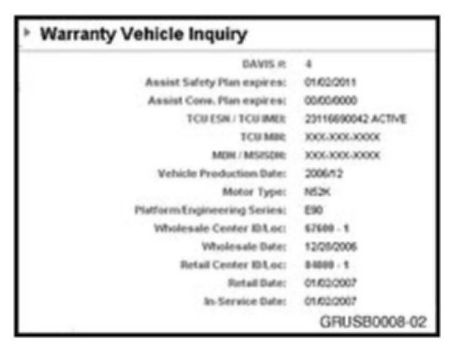
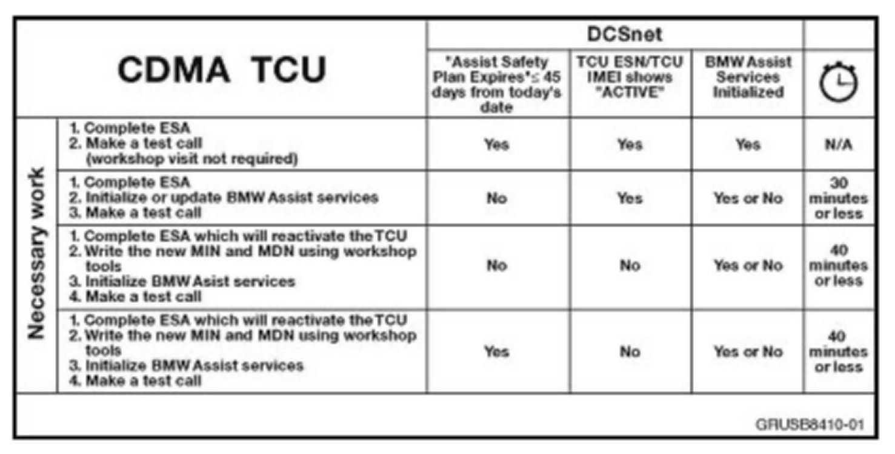
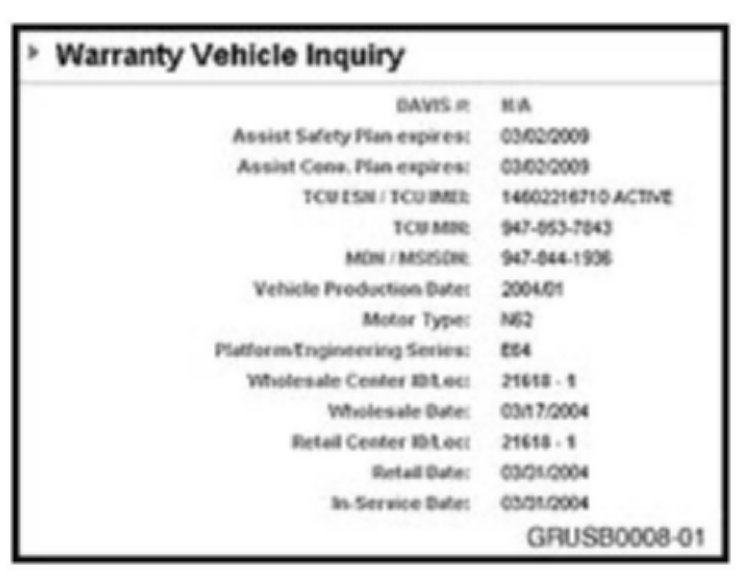
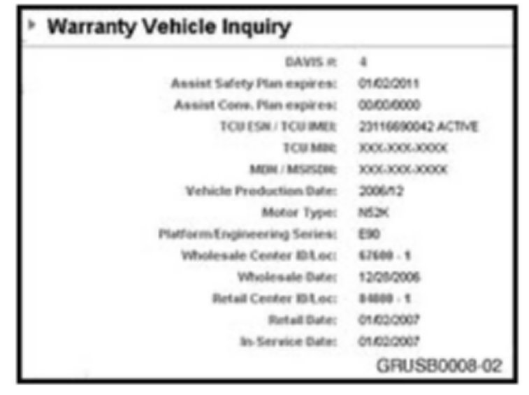
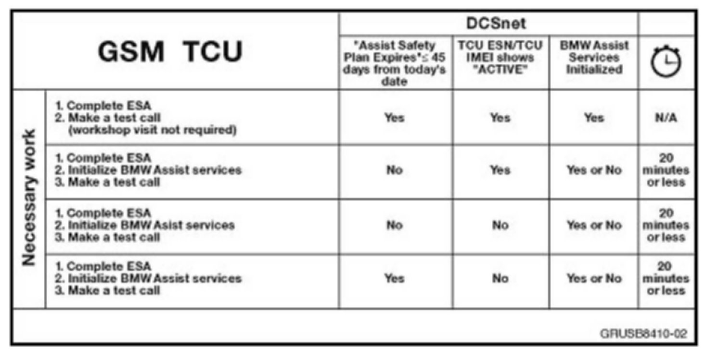

[New] Procedure (Client Advisor or Service Advisor)
[NEW] PROCEDURE (CLIENT ADVISOR OR SERVICE ADVISOR)Identifying the scope of work:

1. Check the vehicle's eligibility status in the DCSnet service history. Document the following information:
^ "Assist Safety Plan expires" date
^ TCU ESN/TCU IMEI status:
"INACTIVE" or "ACTIVE"
2. Identify which TCU type is installed in the vehicle by referring to the model section in this bulletin.
^ CDMA: proceed to step 3.
^ GSM: proceed to step 10.
^ INACTIVE: If the customer previously declined or did not renew the BMW Assist services, or if a subscriber agreement was never processed or received, BMW NA deactivates the wireless carrier and Response Center services.
^ ACTIVE: The TCU is still activated on the wireless carrier network. The "Assist Safety Plan expires" must be beyond today's date, and the TCU must be active BMW Assist services to work.
^ The complete reactivation process must be followed for the services to work.
3. On CDMA TCUs, verify the work that needs to be performed, using the chart below.

^ Important information on vehicles equipped with a CDMA TCU from 9/05 production, or if the TCU was replaced on a pre-9/05 production vehicle with newer hardware:
^ To comply with wireless service provider restrictions, when a BMW Assist account expires, BMW of North America, LLC must prevent the Network Access Device (NAD) from registering on the wireless network. If a BMW Assist account has expired and the vehicle was produced after 9/05 production, BMW may send the Power Off Command (POC) to the TCU. This means that the NAD will not turn on or register on the network.
^ When a TCU receives the POC, the BMW workshop tools will not be able to communicate with the NAD. When the DIS/GT1 is unable to communicate with the NAD, the tester will NOT display any information when trying to read the ESN, MIN or MDN. For vehicles which have received the POC, an alternate test module must be used to turn the NAD back on.
4. Using the above time estimates, identify the scope of work that needs to be performed. Provide the customer with an estimate to reactivate BMW Assist services.
5. If the customer wishes to reactivate BMW Assist services, he or she must complete a valid, active subscriber agreement with the BMW Assist Response Center through the enrollment application on DCSnet, located at Sales | BMW Assist | Electronic Subscriber Agreement.
^ Incentives for renewing BMW Assist services: The BMW Assist incentive for selling term extensions is $20 per year of renewed service. For additional information, please visit BMW/BMW Assist/Bulletins on Centernet and review Parts bulletin B84 07 06 (BMW Assist Enrollment Sales Incentive Program).
6. Upon completion of an Electronic Subscriber Agreement (ESA), the TCU will be automatically reactivated with the wireless carrier. A new Mobile Identification Number (MIN) and Mobile Device Number (MDN) will be automatically assigned within 20 minutes.
^ Wait 20 minutes before printing an updated DCSnet vehicle history report, so that the new numbers are displayed.

7. The MIN and MDN are displayed after the reactivation for 14 days. Print this page for the technician to complete the TCU reactivation process by writing the numbers in to the TCU.

8. If the MIN and MDN information is required outside this reactivation period, please call the Telematics Analyst to obtain this information prior to having a technician complete the reactivation process.
A return call or fax from the Telematics Analyst with the new MIN and MDN will occur within three hours during business hours (8:30 AM to 4:30 PM EST). if the customer is waiting, fax the BMW Assist reactivation form and call the telematics Analyst to expedite the process.
9. Provide the technician a copy of the DCSnet service history report, showing the new MIN and MDN.
10. GSM: The Mobile Subscriber International Services Digital Network Number (MSISDN) is NOT needed during the reactivation process. If you need the MSISDN or if the ICC-ID was not automatically reactivated, obtain this information by faxing the BMW Assist reactivation form. A return call or fax from the Telematics Analyst with the new MSISDN will occur within three hours during business hours (8:30 AM to 4:30 PM EST). If the customer is waiting, fax the BMW Assist reactivation form and call the Telematics Analyst to expedite the process.
11. On GSM TCUs, verify the work that needs to be performed using the below chart.

12. Using the above time estimates, identify the scope of work that needs to be performed. Provide the customer with an estimate to reactivate BMW Assist services.
13. If the customer wishes to reactivate BMW Assist services, he or she must complete a valid, active subscriber agreement with the BMW Assist Response Center through the enrollment application on DCSnet, located at Sales | BMW Assist | Electronic Subscriber Agreement.
^ Incentives for renewing BMW Assist services: The BMW Assist incentive for selling term extensions is $20 per year of renewed service. For additional information, please visit BMW/BMW Assist/Bulletins on Centernet and review Parts bulletin B84 07 06 (BMW Assist Enrollment Sales Incentive Program).
14. Upon completion of an Electronic Subscriber Agreement (ESA), the TCU will be automatically reactivated with the wireless carrier. A new Mobile Subscriber International Services Digital Network Number (MSISDN) will be assigned to the International Circuit Card Identifier (ICCID). The MSISDN is not needed for the reactivation process.
15. Have the technician initialize BMW Assist and make a test call per the attachment to this bulletin (B842205_GSM_MOST-bus_Vehicles).